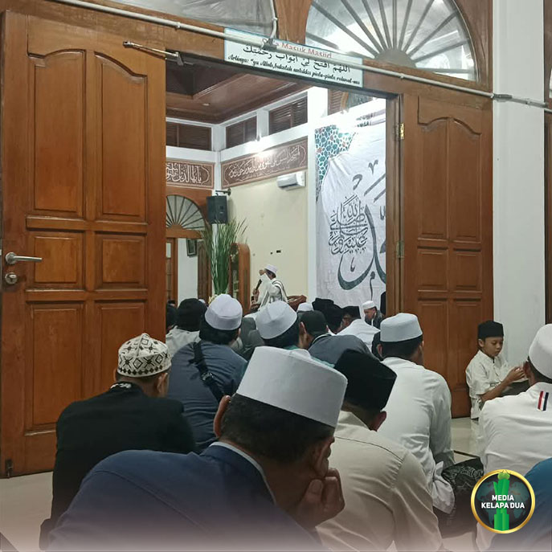

Berita Utama

Maulid Nabi di Masjid Jami At-Taqwa Kelapa Dua Berlangsung Khidmat dan Semarak
Tanggal, 3 Oktober 2026
MediaKada | Dewan Kemakmuran Masjid (DKM) Masjid Jami At-Taqwa menyelenggarakan peringatan Maulid Nabi Muhammad SAW 1448 Hijriah di Masjid Jami At-Taqwa, Jalan Komplek DPR RI RT 006 RW 08, Kelurahan Kelapa Dua, Kecamatan Kebon Jeruk, Jakarta Barat. Kegiatan berlangsung dengan penuh khidmat dan diikuti oleh ratusan jamaah serta warga sekitar, pada Sabtu (3/10/2026) malam.
Peringatan Maulid Nabi Muhammad SAW yang menjadi agenda tahunan DKM Masjid Jami At-Taqwa tersebut tidak hanya menjadi ajang silaturahmi dan kebersamaan warga, tetapi juga sebagai momentum untuk mengingat, meneladani, serta mengimplementasikan akhlak mulia Rasulullah SAW dalam kehidupan sehari-hari di tengah masyarakat.
Rangkaian acara dimulai selepas Salat Isya berjamaah dengan pembacaan tahlil dan doa bersama. Selanjutnya, Ketua Panitia sekaligus Ketua DKM Masjid Jami At-Taqwa, Ust. Arwan Akbari, menyampaikan sambutan pembuka dan ucapan terima kasih kepada seluruh pihak yang telah mendukung terselenggaranya kegiatan tersebut.
Acara kemudian dilanjutkan dengan penyerahan santunan kepada anak-anak yatim sebagai bentuk kepedulian sosial dan implementasi ajaran Rasulullah SAW dalam memuliakan kaum dhuafa. Suasana semakin syahdu saat pembacaan Maulid Simtudduror yang berisi syair pujian serta kisah kelahiran Nabi Muhammad SAW yang dipimpin oleh Ust. H. Doddy Syaiful Anwar.
Pembacaan ayat suci Al-Qur'an oleh Qori Ust. H. Ahmad Faisal, S.Pd.I turut menambah kekhusyukan acara. Selanjutnya, Lurah Kelapa Dua, Elfin Ridho Putra, memberikan sambutan sekaligus pesan kepada para jamaah yang hadir.
Dalam sambutannya, Elfin Ridho Putra mengingatkan pentingnya peran keluarga dan masyarakat dalam membentengi generasi muda di tengah pesatnya perkembangan teknologi, khususnya penggunaan gadget dan internet. Menurutnya, kemudahan akses teknologi saat ini harus diimbangi dengan pendidikan agama yang kuat agar anak-anak tetap dekat dengan masjid dan kegiatan keagamaan.
Selain itu, ia juga mengajak seluruh warga untuk terus menjaga kerukunan dan menciptakan lingkungan yang harmonis antarumat beragama sebagai modal penting dalam membangun kehidupan bermasyarakat yang aman, damai, dan penuh toleransi.
Puncak acara diisi dengan tausiah agama yang disampaikan oleh KH. Fakhruddin Al Bantani, S.H.I., M.Pd. Dalam tausiahnya, beliau menekankan pentingnya menumbuhkan rasa cinta kepada Rasulullah SAW dengan meneladani akhlak, kepribadian, serta perjuangan beliau dalam setiap aspek kehidupan. Jamaah juga diajak untuk memperkuat keimanan dan mempererat ukhuwah Islamiyah sebagai bentuk kecintaan kepada Nabi Muhammad SAW yang senantiasa mencintai umatnya.
Kegiatan peringatan Maulid Nabi Muhammad SAW ini turut dihadiri sejumlah tokoh agama, tokoh masyarakat, dan unsur pemerintahan. Hadir di antaranya Lurah Kelurahan Kelapa Dua Elfin Ridho Putra, KH. Fakhruddin Al Bantani, S.H.I., M.Pd., Ust. H. Ahmad Faisal, S.Pd.I., Dr. Helmi Yusuf, M.A., Dr. KH. Haitami M. Nuh, M.A., KH. Sutrisno Hadi, Ust. Arwan Akbari, H. Riswan, H. Agus, Bhabinkamtibmas Kelurahan Kelapa Dua, Ketua RW 08 Bisri Ali, anggota LMK RW 08 dan RW 03 Kelurahan Kelapa Dua, FKDM Kelurahan Kelapa Dua, serta para Ketua RT di lingkungan RW 08.
Melalui peringatan Maulid Nabi Muhammad SAW ini, diharapkan nilai-nilai keteladanan Rasulullah SAW dapat terus tertanam dalam kehidupan masyarakat serta menjadi inspirasi dalam memperkuat kebersamaan, kepedulian sosial, dan keharmonisan di lingkungan Kelurahan Kelapa Dua.
(From : LMK-08 Kelapa Dua)

Pemanfaatan Lahan Bersama Komunitas Melon Kelapa Dua